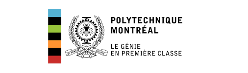
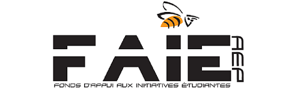
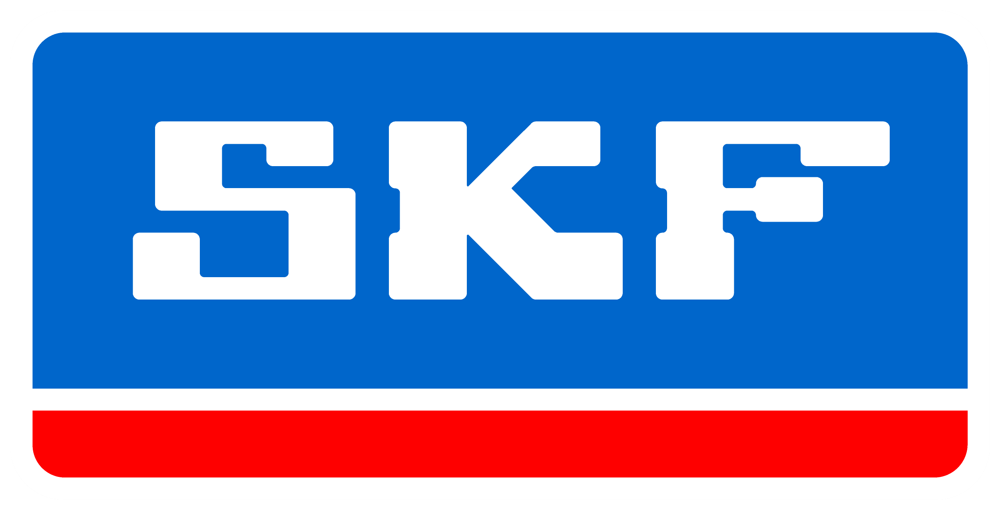

|
Wassime Siguerdidjane Directeur conception 4e année d'implication |
Jean-Loup Dompierre Directeur fabrication 3e année d'implication |
|
Nicolas Cabral Adjoint administratif 2e année d'implication |
Éolie Maurice Responsable commandites 1e année d'implication |
|
Wassime Siguerdidjane Chassis 4e année d'implication |
Jean-Francois Piche Groupe motopropulseur 3e année d'implication |
Rose-Élizabeth Banville Suspension 3e année d'implication |
|
Jean-Loup Dompierre Freins 3e année d'implication |
Julien Moquin Carosserries 3e année d'implication |
Catherine Gaboriault Trésorerie 2e année d'implication |
|
Vincent Paquin & Antoine Bérard Direction 3e année d'implication |
Eric Hovington Web 2e année d'implication |
Nicolas Cabral Intégration et ergonomie 2e année d'implication |
|
Wassime Siguerdidjane 4e année d'implication |
Rose-Élisabeth Banville 3e année d'implication |
Antoine Bérard 3e année d'implication |
|
Julien Dionne 3e année d'implication |
Jean-Loup Dompierre 3e année d'implication |
Juan Camillo Hoyos 3e année d'implication |
|
Julien Moquin 3e année d'implication |
Vincent Paquin 3e année d'implication |
Jean-François Piché 3e année d'implication |
|
Frédéric Pilon 3e année d'implication |
Françis Beauchamp 2e année d'implication |
Nicolas Cabral 2e année d'implication |
|
Catherine Gaboriault 2e année d'implication |
Éric Hovington 2e année d'implication |
Keith-Antoine Leang 2e année d'implication |
|
David Levasseur 2e année d'implication |
Félix Maillette 2e année d'implication |
Jean-Philippe Piché 2e année d'implication |
|
Marc-Antoine St-Georges 2e année d'implication |
Kassandra Bouchard 1ere année d'implication |
Vincent Breton 1ere année d'implication |
|
Olivier Duchesne 1ere année d'implication |
Victor Filion 1ere année d'implication |
Simon Guillemette 1ere année d'implication |
|
Christophe Hallé 1ere année d'implication |
Éolie Maurice 1ere année d'implication |
Raphaël Montpetit 1ere année d'implication |
|
Hélène Papillon-Laroche 1ere année d'implication |
Khaled Tliti 1ere année d'implication |
Valentine Zeni 1ere année d'implication |

L'un des buts importants du projet est de participer et
de bien performer aux différentes compétitions.
Trois compétitions par an sont organisées pas la
SAE et une compétition amicale hivernale est organisée
par l'Université de Laval à Québec.
Les compétitions de la SAE permettent de se démarquer
sur plusieurs plans : le statique, le dynamique et
l'endurance. Les épreuves statiques consistent en une
inspection technique obligatoire du véhicule, sans
quoi le baja ne pourrait participer, des présentations
de design et de marketing. Les épreuves dynamiques
permettent de tester les performances du véhicule,
les épreuves sont donc souvent extrêmes. Il y a,
entre autres, un test d'accélération, une épreuve de
manouvrabilité, une montée de pente, un tir de charge,
une épreuve à travers de grosses roches ou de la boue,
ou encore la traverse d'un plan d'eau. L'épreuve
d'endurance consiste en une course de quatre heures
sur une piste rocailleuse, boueuse, abrupte, qui met
le véhicule dans les pires conditions de course.
La compétition hivernale ‹‹ l'Épreuve du Nord ›› est une
course sur neige et sur glace qui se déroule souvent
entre les différentes équipes québécoises. Il s'agit
plus simplement d'une course d'endurance de 2 heures.
La course sur neige est très différente que sur piste
‹‹ sèche ››, le comportement du véhicule est d'autant
plus intéressant.
Sur le site de la compétition, tout est assuré par
les membres de l'équipe, des présentations statiques
au pilotage, en passant par la réparation du véhicule
ou l'organisation des différentes épreuves
|
Résultats 2014-2015
Auburn, Alabama - 7e Overall Baltimore, Maryland - 5e Overall Portland, Oregon - 11e Overall |
Résultats 2013-2014
Kansas - 10e Overall Illinois - 17e Overall |
|
Résultats 2012-2013
Épreuve du Nord - 2e Overall Washington - 11e Overall Rochester - 13e Overall |
Résultats 2011-2012
Wisconsin - 72e Overall Portland, Oregon - 42e Overall |
|
Résultats 2010-2011
Illinois - 13e Overall Kansas - 53e Overall |
Résultats 2009-2010
Auburn, Alabama - 7e Overall Baltimore, Maryland - 5e Overall Portland, Oregon - 11e Overall |
|
Résultats 2008-2009
Épreuve du Nord - 7e Overall Oregon - 21e Overall Wisconsin - 7e Overall |
Voici les photos qui ont été prise lors des dernières compétition. Les compétition sont des évènement de grande envergure et très important pour notre équipe. Pour plus de photos vous pouvez visité notre page Facebook ou notre gallerie Flikr.
L’équipe s’engage à donner un maximum de visibilité à ses différents
commanditaires. Pour ce faire, le véhicule participera,
entre autres, à plusieurs événements, dont le Festival Eurêka!
(en juin 2017) aux quais du Vieux-Port. Le Baja sera ainsi vu
par le grand public, affichant fièrement ses commanditaires.
De plus, l’équipe participera à la 15e édition du Festival Hors
Route à St-Esprit. Ce festival permet, encore une fois, de présenter
notre véhicule à plus de 25 000 visiteurs.
En plus des événements promotionnels, léquipe participera à
trois compétitions officielles organisées par la SAE. Lors de
ces événements, l’équipe donnera de la visibilité à ses commanditaires,
par le biais de matériel promotionnel tel que des
chandails ainsi que des autocollants apposés sur le véhicule.
En plus du rayonnement hors établissement, l’équipe du SAE Baja est toujours
présente aux activités promotionnelles à l’intérieur de l’école, telles les
portes ouvertes, et s’engage à s’impliquer pour amener de nouveaux étudiants
à s’intéresser à des projets comme le Baja puisqu’il permet l’application
des notions apprises à l’école en plus d’éduquer les étudiants à une
grande autonomie. Lors de ces évènements l’équipe en profite pour afficher
la liste de ses partenaires aux ingénieurs en devenir de l’école.
Voici nos commanditaires Platine (Plus de 3000$),
Or (entre 1500 à 3000$), Argent (entre 500 à 1500$)
et Bronze ( moins de 500$). Sans eux notre projet serait
impossible, leur contribution est fondamentale et très apprécié
|  |

|
|  |

|
|

|
 |
|
|
| |
|
|
|
2900 Boulevard Édouard Montpetit, H3T 1J4
Montreal, QC, Canada
Expédition: 2500 chemin de Polytechnique, porte S-114
Téléphone: 514-340-4711 #4311
Courriel: epm_mud_bees@googlegroups.com
Local: A-495